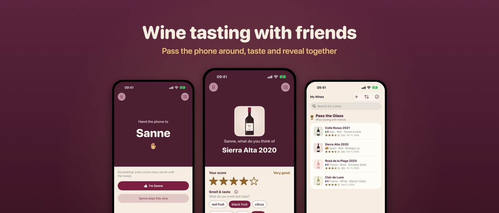
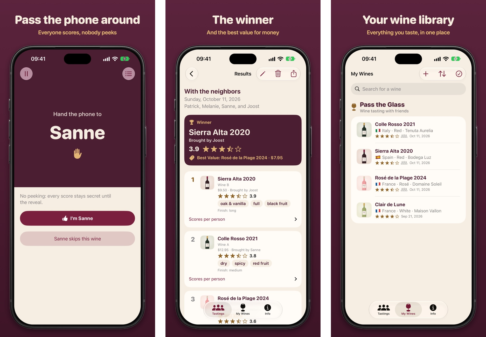
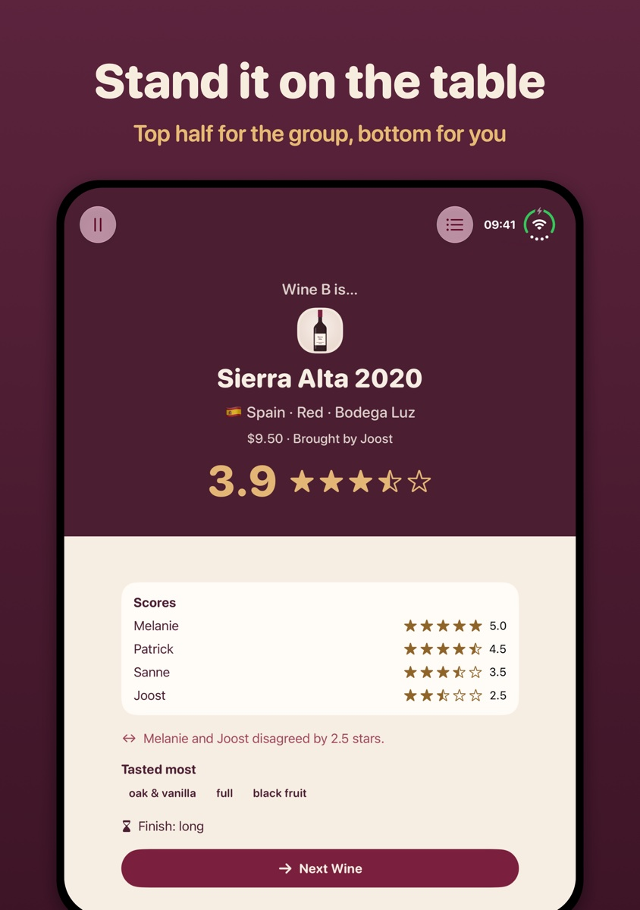

Pass the Glass
Nederlands
Pass the Glass
Nederlands
Wine tasting with friends
Pass the Glass is our app for tasting wine with friends. One phone goes around the table, everyone gives their own score, and at the end you reveal the winner together. No tasting sheets, no pens.

How it works
- Prepare. Add the tasters and the wines, or pick your regular group. You can taste blind, too.
- Taste. Pour, then look, smell and taste.
- Pass it on. The phone goes around. Nobody sees anyone else's score.
- Reveal. For each wine a drum roll plays as the score climbs. Then you see what everyone thought, and who disagreed. At the end comes the winner, with confetti.
Best Value
Add the vintage, the price and who brought the bottle too. Price and bringer stay secret until the reveal. With prices, the results name the Best Value: the most stars for your money.
No wine knowledge needed
Give stars and tap what you taste: red fruit, spicy, dry or sweet. How long does the taste linger? Not sure what a word means? Tap ⓘ for an explanation. You'll become a better taster along the way.
My Wines: your own wine library
Everything you taste, in one place. After each tasting, its wines are added to My Wines automatically, with the group's score. And had something good at a restaurant? Take a photo of the label and give it stars. Later you'll still know which wine it was.

Made for iPhone Duo
Stand the Duo half open on the table. The top half shows the reveal to the group, the bottom half is where the person holding the phone gives their score. Open, as a book or closed, everything fits the pose. The app also works on any other iPhone with iOS 27.

Why an app?
The idea comes from our Borrelclub-Box, a tasting box for at home. The paper tasting sheets always got lost, and a phone going around the table is more fun.
Privacy
Everything stays on your own phone. No account, no ads, no tracking. Read the privacy policy.
For shops
Do you sell wine boxes? With a QR code on the card, the wines are ready to taste in the app. How to join.
Download
Free on the App Store, in English and Dutch.
Pass the Glass on the App Store
18+, please drink responsibly.